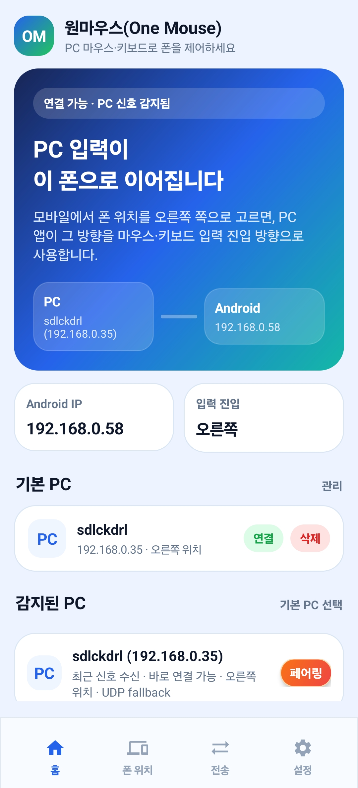

Power
Check app power
If the Android power button is off, background work and input receivers are stopped. Turn it on before connecting.
Help
Most issues fall into app power, Android permission, local network discovery, pairing, or placement. Check them in order before changing advanced settings.
Power
If the Android power button is off, background work and input receivers are stopped. Turn it on before connecting.
Permissions
Android input control requires the OneMouse Accessibility service. A visible PC does not mean input can be delivered.
Battery
If the connection drops after the screen turns off, open the battery optimization setting from the app settings screen.
Discovery
Guest Wi-Fi, AP isolation, company networks, and firewalls can block both mDNS and UDP discovery.
Layout
Save the phone position again after rotation or display changes. The PC uses that placement for cursor handoff.
Return
If the cursor does not return from Android, press Ctrl + Alt + Backspace on the PC.
Troubleshooting
Finding the failing step is faster than changing several settings at once.
Confirm the PC app, Android app power, foreground service, and Accessibility permission are active.
Confirm both devices are on the same local network and run device search again.
If the PC shows pairing required, use QR or the 6-digit code again. If state is confused, unpair and pair again.
Check the selected PC, Android position, entry direction, and display rotation state.
Use Ctrl + Alt + Backspace if the cursor feels stuck on the Android side.
Transfer
